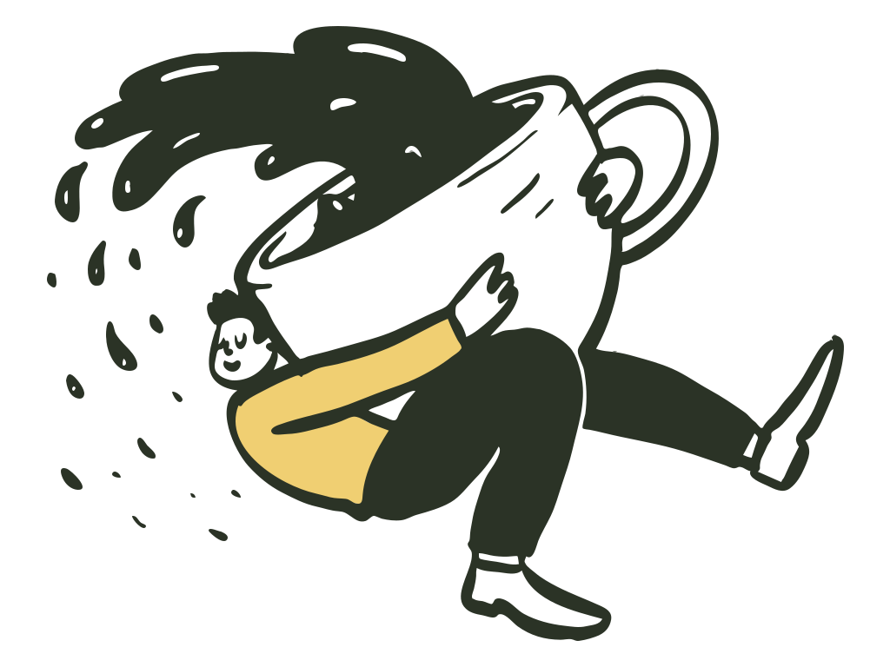
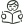
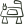
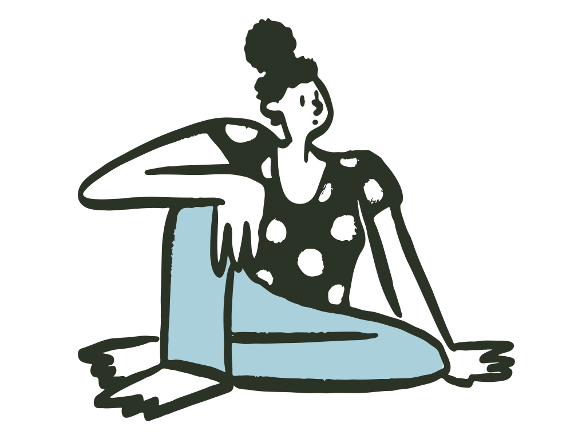
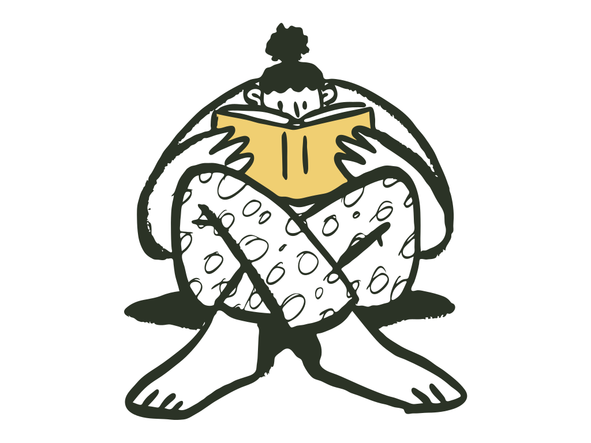
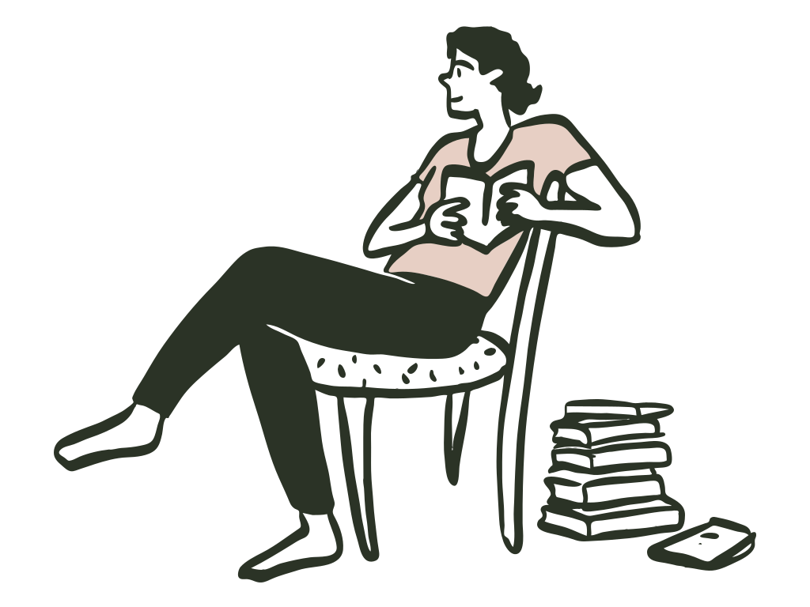
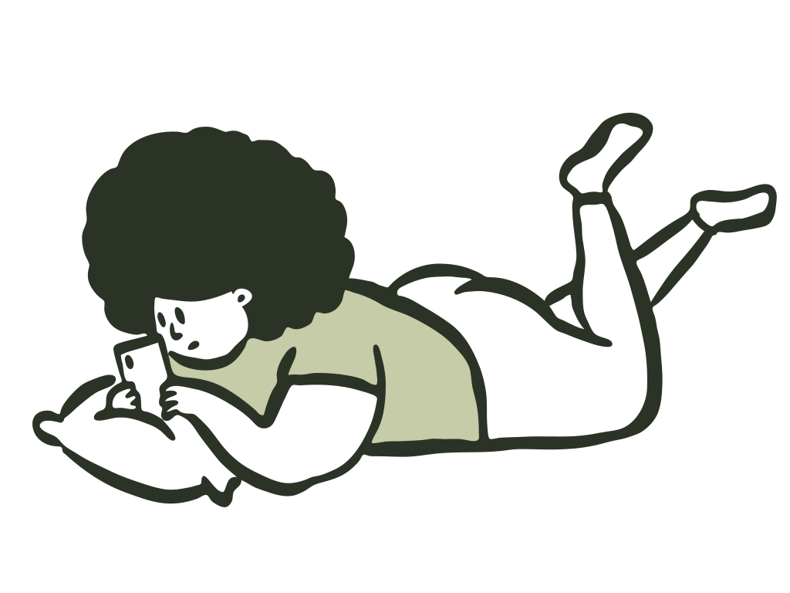
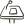
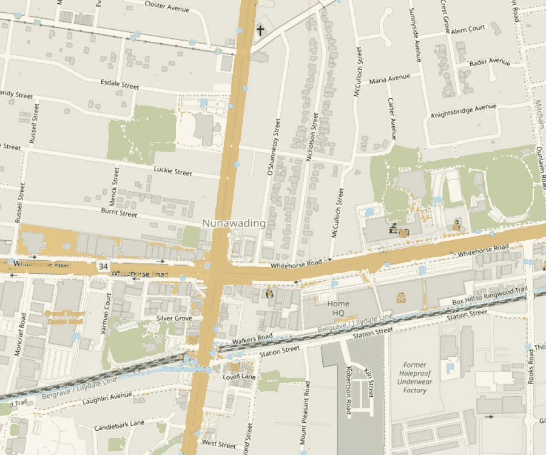
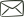

文学夜
围绕阅读、写作、声音、游戏、文化体验与生活观察等主题展开交流。

Shakespeare's Cat Literature Club
一个立足墨尔本、面向澳洲及更广泛地区中文读者的公益文学社群。我们以读者成长为中心，通过共同阅读、线下交流、深度讨论、嘉宾分享、写作输出、跨文化文学活动和 AI 辅助探索，为热爱中文阅读、写作与文学交流的人，提供一个开放、包容、有温度也有深度的中文文学空间。从读到一本书，走向理解一本书；从表达一种感受，走向形成一个观点；从参加一次活动，走向参与一个有生命力的文学共同体。

以读者为中心文学社由读者组成，也以服务读者为核心。活动设计、组织安排、选书机制、讨论形式、嘉宾合作、写作输出与技术使用，都围绕读者的真实需要展开。

有温度也有深度文学社重视人与书、人与人之间的连接，也帮助成员学习和体验深度阅读、深度思考与深度表达。
文学社积极探索 AI 技术在阅读推广、文学讨论、活动组织、写作反馈、资料整理与社群建设中的建设性作用。
文学夜、线下读书会和嘉宾讲座每学期都在办，面向青少年和长者的两类还在计划中。
立足墨尔本，面向澳洲和更广地区中文读者的公益文学社群。2025 年创立。
认真读完一本书，和认真听完一个人说话，用的是同一种耐心。我们想把这份耐心，留在墨尔本的一张长桌上。

莎士比亚的猫文学社是一个立足墨尔本、面向澳洲及更广泛地区中文读者的公益文学社群。文学社以读者成长为中心，通过共同阅读、线下交流、深度讨论、嘉宾分享、写作输出、跨文化文学活动和 AI 辅助探索，为热爱中文阅读、写作与文学交流的人士提供一个开放、包容、有温度也有深度的中文文学空间。
我们相信，阅读不只是个人行为，也可以成为人与书、人与人、人与自我之间重新建立连接的方式。在一个日益碎片化和快节奏的时代，文学社希望持续营造认真阅读、真诚表达、彼此回应和共同成长的文化氛围。
文学社的愿景不是单纯组织一场场读书活动，而是建设一个能够长期陪伴读者成长的中文文学社群。我们希望帮助成员从「读到一本书」走向「理解一本书」，从「表达一种感受」走向「形成一个观点」，从「参加一次活动」走向「参与一个有生命力的文学共同体」。
尊重读者多样化的阅读需求与参与方式，围绕读者的真实需要设计活动，鼓励每个人通过阅读、交流与表达获得理解、连接和成长。

营造真诚、友善、包容的社群氛围，同时倡导深入阅读、独立思考和理性讨论，让文学交流既有人文关怀，也有思想深度。

合理运用 AI 辅助阅读、讨论、写作和社群运营，提升参与体验与活动质量，同时坚持以人为本，尊重独立判断、原创表达与隐私边界。

三个模块每学期都在进行，两个还在筹备。点开一本书脊，看看它是做什么的、多久一次、在哪里办。
一场轻松自在的文学聚会，也是认识文学社最容易的入口。不必提前读完一本书，可以带来喜欢的文字，分享最近的阅读发现，或者参加文学游戏、主题闲谈和写作交流。在这里，文学是认识彼此、分享生活的一种方式。
围绕一本共同选择的文学作品，大家坐在一起聊聊阅读中的感受、疑问和发现。不需要文学专业背景，也不必担心自己的理解是否正确。读完的朋友可以深入分享，尚未读完的朋友也欢迎参与。我们从不同的阅读体验出发，一起发现作品中值得思考的地方。
邀请作家、译者、学者、编辑和阅读推广人走近读者，分享创作故事、文学知识和阅读经验。我们不仅希望听嘉宾讲述，也鼓励读者带着自己的问题参与交流，让专业视角与真实的阅读体验相遇，打开理解文学的更多可能。

让海外成长的孩子发现中文阅读的乐趣。我们希望通过优秀的儿童文学和青少年作品，帮助孩子从愿意翻开一本书，逐渐走向自主阅读、理解故事和表达想法。同时，也为家长和老师提供阅读指导与交流机会，让中文阅读成为孩子生活中自然、有趣的一部分。
让阅读成为丰富晚年生活、分享人生故事和结识朋友的一种方式。我们希望通过文学作品、经典篇章和生活主题，邀请长者一起阅读、倾听和交流。不强调阅读速度或文学知识，更重视每个人独特的生命经验，让文字带来陪伴，也让不同的人生故事彼此照亮。
组织架构和官方注册信息将在 11 月 15 日公布。注册名称、编号和各组负责人确定后，会在这里和公众号同时发布。
第一次来，有些疑问很正常。希望这些回答能让你更轻松地走近我们。
10 月 10 日到 12 月 12 日，每个周六都有活动。这学期读李娟、陈忠实和大仲马，从电影读回《教父》，请作家武陵驿来做讲座，也给青少年办读书会和线下活动。
每场活动的报名链接提前一周发在公众号，时间或地点临时有变，也以公众号的通知为准。
每本书在哪天读、由谁主持，都跟着上面的活动安排走。
来之前还有问题，请点击这里。

Nunawading Community Hub Nunawading 站，步行约 10 分钟Nunawading
Community Hub
96-106 Springvale Rd, Nunawading VIC 3131
火车：Belgrave / Lilydale 线 Nunawading 站，步行约 10 分钟
公交：273、902 路。场馆约有 200 个停车位
墨尔本东区的社区空间，地点随报名确认一起发送。
Zoom，报名后收到链接。
从第一次读书会到现在，每一场活动都记在这里。
读得多还是少、快还是慢，十几岁还是七十岁，都有适合你的方式。
从最轻的开始就好。
他们第一次来的时候，也有点紧张。以下几段话来自往期活动后的留言，征得同意后整理，名字用的是他们在群里的称呼。
我书没读完就去了，本来想坐在角落只听。结果小组里一位阿姨问我怎么看福贵，我说着说着就停不下来了。
来澳洲带孙子，白天家里只有我一个人。读书会让我又有了可以聊书的朋友，她们叫我王老师，我很高兴。
下班开四十分钟车过去，进门就有人递茶。那天聊白流苏聊到快六点，回家路上一直在想她到底赢了没有。
微信群二维码七天就会过期，所以请先通过公众号联系。
搜索「莎士比亚的猫文学社」。
附上你的称呼。
管理员会第一时间回应你。
在公众号留言「志愿者」和想做的岗位，或者填下面的表单，我们约你聊一聊。点一下挂牌，背面写着具体做什么。
文学社是公益社群，合作以公益与文化交流为出发点。
填表单、发邮件，或者在公众号留言「合作」都可以。我们是志愿者团队，一般三个工作日内回复。
hello@example.org同城的读书会、出版社、学校、图书馆和文化机构，都欢迎来信。
联合选书，轮流主持，互相开放活动名额。同城的中文、英文读书会都欢迎。

致 读书会新书分享、译者对谈、读者见面会。
中文学校的课外阅读、亲子共读活动。
社区文学活动、中文书展、主题书单。
多元文化节、长者中心的朗读会。
书友写下的散文、小说和读后感，都在公众号发表过。翻开来读，读完可以留言。
原型示例文字，上线前需与实际使用的服务核对。
网站本身不设注册和报名。你提交合作表单时，会收集称呼、机构、邮箱和留言；在书友作品下留言时，会收集称呼、邮箱和留言内容，其中只有称呼和留言会公开显示。活动报名在公众号完成，适用微信的隐私政策。
只用于回复你的咨询和显示你的留言，不出售，不用于推广，不转交第三方。留言会先经过反垃圾过滤和编辑审核。
合作沟通结束后保留一年，之后删除。你可以随时要求提前删除。
如使用访问统计、嵌入服务或 Cookie，会在此列明服务名称及关闭方法。
活动照片和成员作品征得同意后才发布，可以随时要求撤下。涉及未成年人须经监护人同意，且不公开可识别身份的细节。
通过公众号留言，或写信到对外联系邮箱。